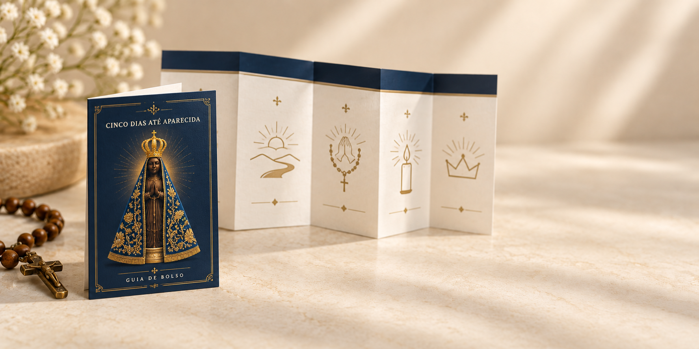

Seu nome e seis etapas, no seu ritmo.
Entendemos um pouco melhor o que você está levando consigo neste dia 12…
Seu nome e seis etapas, no seu ritmo.
Entendemos um pouco melhor o que você está levando consigo neste dia 12…
12 DE OUTUBRO • DIA DE NOSSA SENHORA APARECIDA12 OUT · HORÁRIO DE BRASÍLIA
Faltam poucos dias. Comece hoje a preparar a intenção que você deseja levar consigo.
Prepare sua intenção em cinco passos, de 8 a 12 de outubro.
Contagem até 12/10/2026, às 00h · horário de BrasíliaHorário de BrasíliaDE 8 A 12 DE OUTUBRO · UMA JORNADA DE FÉ
Sua intenção já tem um lugar nesta jornada.
Uma preparação de cinco dias para Nossa Senhora Aparecida, de 8 a 12 de outubro. Siga um caminho simples de oração, ação e preparação, com sua intenção no centro — e chegue ao dia 12 sabendo como apresentar aquilo que hoje ocupa seu coração.
O guia acompanha sua oração e sua ação, de 8 a 12 de outubro.
Acesso imediato após a confirmação · Guia prático · R$ 27,90
Uma graça. 5 dias. 5 passos.
Até 12 de outubro.
O caminho começa
no coração.

O QUE VOCÊ LEVA CONSIGO
Talvez você já tenha feito esse mesmo pedido outras vezes. Talvez essa situação acompanhe você há meses — ou até anos.
E, quando chega o Dia de Nossa Senhora Aparecida, surge novamente aquela vontade de colocar tudo nas mãos Dela.
Os dias antes desse encontro podem ter um sentido próprio: dar espaço à sua intenção, escolher uma oração e realizar um pequeno gesto a cada dia.
Você pode chegar ao dia 12 com um pedido no coração.
E com cinco passos de preparação vividos por você.
CINCO DIAS. UM PASSO DE CADA VEZ.
Você não precisa descobrir o que rezar ou o que fazer a cada dia. Abra seu guia, viva o passo proposto e marque como concluído.
Definir a graça ou intenção que deseja colocar nas mãos de Nossa Senhora e iniciar sua preparação.
Escolher uma pequena renúncia ou gesto voluntário, possível e seguro, que represente seu compromisso.
Dedicar um momento à oração e à intercessão pela graça que está apresentando.
Dar um passo concreto, escrever sua intenção ou carta e preparar o coração para o dia 12.
Apresentar sua intenção no Santuário, em uma igreja, diante de uma imagem ou de onde estiver.
Em cada dia, um passo simples:
Reflexão curta·Oração·Ação prática·Pequeno compromisso·Marcar como concluídoA SUA INTENÇÃO É O CENTRO
Um mesmo caminho de cinco passos, vivido com a intenção que você compartilhou no questionário.
Você compartilhou uma intenção que deseja colocar nas mãos de Nossa Senhora Aparecida.
Durante esses cinco dias, ela será o centro dos seus momentos de reflexão, oração e ação.
NO PAPEL OU NO CELULAR
Um companheiro para abrir a cada dia, acompanhar seu próximo passo e guardar aquilo que você deseja apresentar a Nossa Senhora.
Salve no celular ou imprima. Leve consigo para Aparecida — ou prepare seu momento de oração em casa.
Uma jornada para viver e acompanhar, com espaço para a sua intenção.
ENQUANTO VOCÊ LÊ, O DIA 12 SE APROXIMA.
12 DE OUTUBRO • DIA DE NOSSA SENHORA APARECIDA
Faltam poucos dias. Comece hoje a preparar a intenção que você deseja levar consigo.
Contagem até 12/10/2026, às 00h · horário de BrasíliaUM CAMINHO COMPLETO
12 DE OUTUBRO · O ENCONTRO
Depois de cinco dias carregando conscientemente sua intenção, você chegará ao Dia de Nossa Senhora Aparecida tendo percorrido todo o caminho.
Se estiver em Aparecida, poderá levar seu guia consigo. Se estiver longe, poderá concluir sua preparação de onde estiver.
Naquele momento, você terá sua intenção escrita, sua oração final e o último passo da jornada.
Minha intenção. Minha oração.
Meu momento com Nossa Senhora.
AGORA A DECISÃO É SUA.
12 DE OUTUBRO • DIA DE NOSSA SENHORA APARECIDA
Faltam poucos dias. Comece hoje a preparar a intenção que você deseja levar consigo.
Contagem até 12/10/2026, às 00h · horário de BrasíliaPara viver os cinco passos de 8 a 12 de outubro, organize agora o seu começo.
SEU PRÓXIMO PASSO
Uma intenção no centro. Um caminho para cada dia. Um guia para acompanhar você até o encontro.
Uma graça. 5 dias. 5 passos. Até 12 de outubro.R$ 27,90
Pagamento único.
Acesso imediato após a confirmação.
Para acompanhar pelo celular ou imprimir.
ANTES DO SEU PRIMEIRO PASSO
Não. O guia contempla tanto quem estará no Santuário quanto quem viverá o dia 12 em casa ou em outro lugar.
A proposta é simples e feita para caber na rotina: uma reflexão curta, uma oração, uma ação e um pequeno compromisso. Você pode adaptar cada momento ao seu ritmo.
Sim. Você pode imprimir seu guia ou salvá-lo no celular para acompanhar a jornada.
Uma escolha pequena, voluntária e segura, como reservar um tempo que seria dedicado a uma distração. Respeite seus limites; a jornada não exige privação de alimentos nem práticas que coloquem sua saúde em risco.
Não. A fé não é uma transação. O guia oferece uma preparação espiritual organizada para viver esses cinco dias com intenção, oração e ação. A compra não garante cura, gravidez, dinheiro ou reconciliação.
A jornada foi pensada para 8 a 12 de outubro. Se começar depois, acompanhe os passos possíveis no seu ritmo; você pode adaptar os passos ao tempo disponível até o dia 12. Você também pode retomar o roteiro em outro período.
A INTENÇÃO JÁ ESTÁ COM VOCÊ
Cinco dias para preparar o coração e viver sua intenção com oração, reflexão e ação.